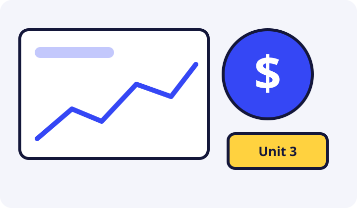

Student packet
Scenario, documents, tasks with work space, reflection, checklist, and rubric.
Pick the right accounts and design a plan to reach a real emergency fund.

Nearly every financial plan starts with a safe place for money and a cushion for emergencies. You will compare three fictional institutions, estimate fees and interest, reconcile a statement, and build a 3-year emergency-fund plan for Kofi.
Scenario, documents, tasks with work space, reflection, checklist, and rubric.
Launch slides to introduce the scenario, tasks, key math, and scoring.
Pacing, worked calculations, sample responses, misconceptions, differentiation, and the 100-point rubric.